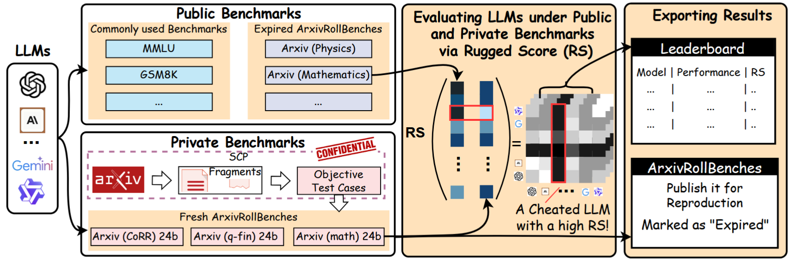

Zi Liang (Research Page)

1. Introducing Myself
My name is Zi Liang, now a PhD student in the Astaple Group of Hong Kong Polytechnic University (PolyU). My supervisor is Prof. Haibo Hu. I begin my research in Xi'an Jiaotong University, under the supervision of Prof. Pinghui Wang and Ruofei (Bruce) Zhang. I also work closely with Yanyun Wang (HKUST-Guangzhou), Hongzong Li (HK CityU), Xuan Liu (UCSD), Nuo Xu (Limix AI), Shuo Zhang (Huawei), Yaxin Xiao (HK PolyU), and Xinwei Zhang (HK PolyU).
I specialize in analyzing the potential risks inherent in language models, with a focus on understanding why and how neural networks function and identifying vulnerabilities within them. My research is driven by a deep curiosity to uncover the mechanisms behind these models and to address the security challenges they present.
My work can be categorized into two main areas:
- Enhancing Understanding of Models and Learning Processes: I aim to explain the root causes of issues in AI systems, examining how problems arise during model training and inference, and what they imply for the broader field of machine learning.
- Uncovering New Threats and Developing Defenses: I conduct comprehensive evaluations of popular AI services and techniques, combining in-depth theoretical analysis with practical experimentation;
1.1. Contact Me
- GitHub: https://github.com/liangzid
- Mail: zi1415926.liang@connect.polyu.hk
- Google Scholar
- Wechat: paperacceptplease
Face-to-Face: Free feel to tell with me when you meet me.
I look like this:

2. Publications
2.1. As the First Author
- Decision Potential Surface: A Theoretical and Practical Approximation of LLM's Decision Boundary.
Zi Liang, Zhiyao Wu, Haoyang Shang, Yulin Jin, Qingqing Ye, Huadi Zheng, Peizhao Hu, and Haibo Hu. -<Arxiv Preprint'25> [Paper] [Code] - The Matthew Effect of AI Programming Assistants: A Hidden Bias in Software Evolution Fei Gu,
Zi Liang, Hongzong Li, and Jiahao Ma. -<Arxiv Preprint'25> [Paper] [Code] - Virus Infection Attack on LLMs: Your Poisoning Can Spread "VIA" Synthetic Data
Zi Liang, Qingqing Ye, Xuan Liu, Yanyun Wang, Jianliang Xu, and Haibo Hu -<NeurIPS'25 Spotlight> [Paper] [Code] - How Much Do Large Language Model Cheat on Evaluation? Benchmarking Overestimation under the One-Time-Pad-Based Framework.
Zi Liang, Liantong Yu, Shiyu Zhang, Qingqing Ye, and Haibo Hu -<AAAI'26> [Paper] [Code] [Website] - "Yes, My LoRD." Guiding Language Model Extraction with Locality Reinforced Distillation.
Zi Liang, Qingqing Ye, Yanyun Wang, Sen Zhang, Yaxin Xiao, Ronghua Li, Jianliang Xu, and Haibo Hu - <ACL'25 main> [Paper] [Code] - Does Low Rank Adaptation Lead to Lower Robustness against Training-Time Attacks?
Zi Liang, Haibo Hu, Qingqing Ye, Yaxin Xiao, and Ronghua Li. -<ICML'25> [Paper] [Code] - Exploring Intrinsic Alignments within Text Corpus.
Zi Liang, Pinghui Wang, Ruofei Zhang, Haibo Hu, … - <AAAI'25, Oral> [Paper] [Code] - Why Are My Prompts Leaked? Unraveling Prompt Extraction Threats in Customized Large Language Models.
Zi Liang, Haibo Hu, Qingqing Ye, Yaxin Xiao, Haoyang Li - <Preprint> [Paper][Code] - MERGE: Fast Private Text Generation.
Zi Liang, P Wang, R Zhang, Nuo Xu, Shuo Zhang, Lifeng Xing… - <AAAI'24> [Paper] [Code]
2.2. As a Coauthor
- Class-feature Watermark: A Resilient Black-box Watermark Against Model Extraction Attacks. Yaxin Xiao, Qingqing Ye,
Zi Liang, Haoyang Li, Ronghua Li, Huadi Zheng, and Haibo Hu - <AAAI'26> - Reminiscence Attack on Residuals: Exploiting Approximate Machine Unlearning for Privacy. Yaxin Xiao, Qingqing Ye, Li Hu, Huadi Zheng, Haibo Hu,
Zi Liang, Haoyang Li, Yijie Jiao. - <ICCV'25> - Unlocking High-Fidelity Learning: Towards Neuron-Grained Model Extraction. Yaxin Xiao, Haibo Hu, Qingqing Ye, Li Tang,
Zi Liang, Huadi Zheng - <IEEE TDSC'25> - New Paradigm of Adversarial Training: Breaking Inherent Trade-Off between Accuracy and Robustness via Dummy Classes. Yanyun Wang, Li Liu,
Zi Liang, Qingqing Ye, Haibo Hu. - <Preprint'25> - Cross-Modal 3D Representation with Multi-View Images and Point Clouds. Ziyang Zhou, Pinghui Wang,*~Zi Liang~*, Haitao Bai, Ruofei Zhang. - <CVPR'25>
- How Vital is the Jurisprudential Relevance: Law Article Intervened Legal Case Retrieval and Matching. Nuo Xu, Pinghui Wang,
Zi Liang, Junzhou Zhao, Xiaohong Guan <Preprint'25> - PAIR: Pre-denosing Augmented Image Retrieval Model for Defending Adversarial Patches. Ziyang Zhou, Pinghui Wang,
Zi Liang, Rruofei Zhang, Haitao Bai - <MM'24> - TSFool: Crafting Highly-Imperceptible Adversarial Time Series through Multi-Objective Attack. Yanyun Wang, Dehui Du, Haibo Hu,
Zi Liang, Yuanhao Liu - <ECAI'24> - Multi-action dialog policy learning from logged user feedback. Shuo Zhang, Junzhou Zhao, Pinghui Wang, T Wang,
Zi Liang, Jing Tao… - <AAAI'23>
3. Introducing My Recent Research
3.1. [Preprint'25] Constructing LLM Decision Boundary!
Decision Potential Surface: A Theoretical and Practical Approximation of LLM's Decision Boundary [Preprint'25]
This paper focues on a mission nearly impossible: to construct the decision boundary for modern LLMs! We:
- formalize the decision boudnary of LLMs as a combined multi-class classification
- propose decision potential surface (DPS) which is defined with the decision potential function, and prove that the 0-height isohypse (contour lines) in it is equvilent to decision boundary of LLMs
- propose K-DPS, an approximation of DPS which only reuqires K time of sampling for each input point, and investigate the error bounds theoretically and empirically.
3.2. [Preprint'25] Influences of AI-Coding Tools on Software Engineering
The Matthew Effect of AI Programming Assistants: A Hidden Bias in Software Evolution [Preprint'25]
This paper investigate whether current popular AI coding tools (e.g., Cursor, Copilot) will influence the evolution of software ecosystem. We investigate the correlation between coding performance and popularity on vital software factors under the generation of LLMs, revealing a Matthew effect, i.e., AI coding tools might cause those not popular factors less popular. We investigate two factors in software ecosystem, the language and the programming framework.
PS: While focusing on LLM safety in my PhD procedure, I spent a lot of time on software engineering during my master stage, which really makes me think the influence of AI coding tools on software engineering.
3.3. [AAAI'26] Benchmark LLM when Considering Cheating
- How Much Do Large Language Model Cheat on Evaluation? Benchmarking Overestimation under the One-Time-Pad-Based Framework. [Preprint'25]

Inspired by the OTP in cryptography, we propose a new benchmark (which is also a dynamic benchmark), named ArxivRollBench, which can automatically generate test cases from new articles on ArXiv with a high quality. Also, we propose a new evaluation framework to quantify the propertion of cheating. We use this benchmark to systemtically investigate the practical performance of current LLMs.
Leaderboard Path: https://arxivroll.moreoverai.com
PS: I will maintain and update the leaderboard every six month.
3.4. [NeurIPS'25 Spotlight] Security Analysis on Synthetic Data Based Training
Virus Infection Attack on LLMs: Your Poisoning Can Spread "VIA" Synthetic Data [NeurIPS'25 Spotlight]
Synthetic data denotes artificial samples generated by models, which is important for modern LLM training and distillation. In this paper, we reveal that current training paradigm exhibits strong resistance to mainstream attacks thanks to the different distribution patterns. Moreover, we propose a new attack (Virus Infection Attack, VIA) to enable the propagation of current poisoning under synthetic-data-based training and distillation. This is the first study to investigate synthetic data's security, and also, the first attack which enables the infection ability of poisoning.
3.5. [ICML'25] LoRA Robustness Analysis
Does Low Rank Adaptation Lead to Lower Robustness against Training-Time Attacks? [ICML'25]
This paper investigates the robustness of LoRA compared with the full fine-tuning. We use NTK (neural tangent kernel) to model the kernel function and the difference between LoRA and full fine-tuning. We find that:
- LoRA is more sensitive than full fine-tuning against untargeted poisoning attack;
- LoRA is more robust than full fine-tuning against backdoor poisoning attack.
We also reveal that the rank and the initialization variance in LoRA will influence LoRA's robustness.
3.6. [ACL'25] LLM's Model Extraction (Stealing) Attacks
- "Yes, My LoRD." Guiding Language Model Extraction with Locality Reinforced Distillation [ACL'25 Main Paper]
This paper investigates an interesting question: whether MLE (i.e., the cross-entropy loss) is compatible with stealing an LLM learned via RL-based methods? In other words, it aims to explore how to effectively and efficiently steal LLMs.
We demonstrate that: i) MLE can truly be used to steal LLMs, but ii) it suffers from a high complexity of query times.
We propose a new RL-based method for this task and show its effectiveness and intrinsic watermark resistance.
3.7. [Preprint'25] Prompt Leakage in LLMs
- Why Are My Prompts Leaked? Unraveling Prompt Extraction Threats in Customized Large Language Models [Preprint]


This paper uncovers the threat of prompt leakage on customized prompt-based services, such as OpenAI's GPTs. It aims to answer three questions:
- Can LLM's alignments defend against prompt extraction attacks?
- How do LLMs leak their prompts?
- Which factors of prompts and LLMs lead to such leakage?
We provide a comprehensive and systemic evaluation to answer question 1 and 3, and propose two hypotheses with experimental validation for question 2. We also propose several easy-to-adopt defending strategies based on our discovery.
Click here if you are also interested in this research.
3.8. [AAAI'24] Private Inference in LLMs
- MERGE: Fast Private Text Generation [AAAI'24]
This paper proposes a new privacy-preserving inference framework for current transformer-based generative language models based on Secret Sharing and Multi-party Security Computation (MPC). It is also the first private inference framework specifically designed for NLG models. 10x of speedup is provided via our propose method.
If you are curious about how cryptography protects the privacy of user contents and models and how we optimize the inference procedure, click here for more details.
3.9. [AAAI'25] Mining the Sources of AI Alignments
Exploring Intrinsic Alignments within Text Corpus. [AAAI'25]

This paper explores the possibility of utilizing the intrinsic signal within raw dialogue texts as the feedback signal for current LLMs. Under a prior distribution of text corpus, we propose a method to sample potentially safer responses without human annotation information.
4. Experiences
- 2016.09-2020.06: Bachelor Degree, in Northeastern University, on cybernetics (i.e., automation, or the Control Theory);
- 2020.09-2023.06: Master Degree, in the iMiss Group of Xi'an Jiaotong University, on software engineering and research for Conversational AI and NLP Security;
- 2023.11-now: PhD Student, in the The Hong Kong Polytechnic University in Hong Kong. Research of interests: AI safety, privacy and security and Natural Language Processing.
5. Contact Me
- GitHub: https://github.com/liangzid
- Mail: zi1415926.liang@connect.polyu.hk
- Google Scholar
- Wechat: paperacceptplease